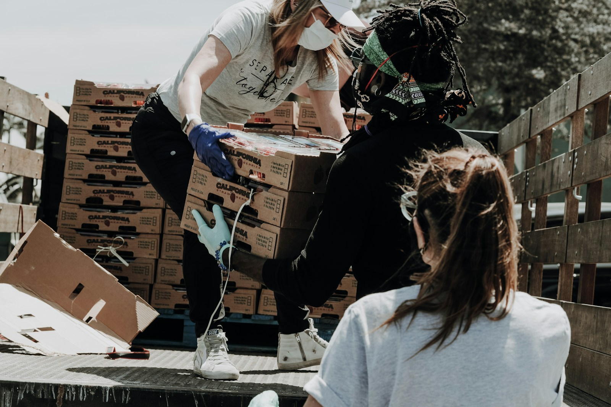

Présenter le territoire, l'équipe pressentie, les motivations et premiers besoins.
Devenir antenne locale
Préparer une implantation locale avec méthode, gouvernance, accompagnement et responsabilités claires.

Qualifier patrimoine vacant, ressources, acteurs, risques et opportunités.
Définir le cadre, les responsabilités, l'usage du nom, les données et la gouvernance.
Former les référents, transmettre les outils et organiser le suivi.
Ouvrir progressivement les actions locales lorsque le cadre est prêt.